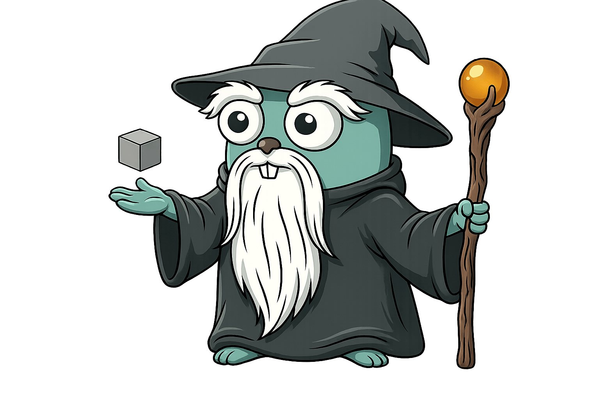

magus



A fast, cross-platform task orchestrator for polyglot monorepos. One statically linked binary, config as code, no second toolchain to install.
Change a file and magus works out which projects it reaches, rebuilds only those, and caches every result so the same work never runs twice.
Why magus exists
The tools you run in a monorepo, you run all day. Build, test, lint, switch branches, do it again. So friction compounds fast. A few wasted seconds a run, one flaky target, a teammate's botched merge that starts failing on your checkout, and now you are babysitting the build instead of shipping the feature. Tooling this central earns its place by getting out of the way. It should be fast, and genuinely good at the narrow thing it does.
The other half of the job is knowledge. Monorepos outgrow the people and tools reading them. Humans grep; AI agents grep faster and guess more confidently; both drown in generated files, legacy patterns, and dependency chains nobody holds in their head. magus takes the opposite bet. The build tool already has to know the repo precisely, down to every project, every target's inputs and declared outputs, and what a diff reaches, so it hands that knowledge back as answers instead of leaving everyone to rediscover it.
That is the rule for the whole surface. Every verb answers a question, deterministically, from declared sources: which projects a change affects, whether a file is generated and by what, where a symbol is used, how two things relate. Nothing in magus decides for you, plans for you, or injects itself into your workflow. Answering is the tool's job; deciding is yours, or your agent's.
The same discipline serves both audiences. A teammate on day one and an AI agent
in a fresh session have the same problem: a repo they cannot yet trust their
guesses about. magus gives them the same fix. Query the
knowledge graph instead of grepping, run
targets instead of raw tools, and let magus affected ci
prove what a change touched. For agents, see Agents.
How it works
Four ideas carry most of the tool. Each has a deeper page; this is the short version.
Affected sets
magus keeps a dependency graph of your projects and knows which files each
target reads. Change a file and magus affected <target> runs only the
projects that change can reach, in dependency order. magus affected ci runs
the full pipeline over that set, so CI does the least work a change requires
and still catches breakage in a project you never opened. See CI.
Content-addressed caching
Every target declares its inputs and outputs. magus hashes the inputs, and if it has already seen that hash it replays the stored output instead of running the work again. The cache is a plain content-addressed store on disk (SHA-256): the input hash is the key, and the stored outputs are addressed by their own content hash, so a replay is a byte-for-byte reproduction of the recorded run.
The knowledge graph
Because magus already knows every project, target, spell, and how they relate,
it exposes that as a graph you can query. magus query "kind:target lint" finds
nodes, magus explain <node> shows a node's edges and what reaches it, and
magus refs <symbol> lists where a symbol is defined and used from a SCIP
index.1 The same graph answers "is this file generated," "what does my diff
touch," and "how do these two things relate" without grepping. See the
knowledge graph.
One vocabulary
magus names a thing once and reuses the name everywhere, in the CLI, the config,
and the graph. A target is a unit of work such as build,
test, or lint. A spell is a language adapter that supplies a
target's operations (the go spell provides go-test; the buf spell provides
buf-lint). A charm is a modifier applied to a run, like rw
for read-write or cd for a working directory. An op is a
single tool invocation. Learn the four words and the rest of the surface reads
the same way.
Getting started
Install
magus ships as a single self-contained binary, so there is no second toolchain to install. See the Download guide.
A first look
A magusfile.buzz at the repo root declares your targets as exported functions -
each one composes operations from the spells you bind:2
import "magus";
import "magus/spell/go";
magus.project({ "spells": [go] });
// Every exported function is a runnable target. It receives a magus\Context,
// the handle it uses to declare what it needs. magus caches each target's
// result and runs it only when a change reaches this project.
export fun build(ctx: magus\Context, args: [str]) > void { go["go-build"](); }
export fun test(ctx: magus\Context, args: [str]) > void { go["go-test"](); }
export fun lint(ctx: magus\Context, args: [str]) > void { go["golangci-lint"](); }
// format is read-only by default: go-fmt reports files that need formatting, and
// go-mod-tidy runs with --diff so it fails if go.mod/go.sum have drifted. The `rw`
// (read-write) charm flips both to apply: `magus run format:rw` formats the code
// and tidies the modules in place.
export fun format(ctx: magus\Context, args: [str]) > void {
go["go-fmt"]();
go["go-mod-tidy"]();
}
// 'ci' is the anchor `magus affected ci` keys off: it composes the pipeline
// by declaring the targets it needs.
export fun ci(ctx: magus\Context, args: [str]) > void {
ctx.needs(build, test, lint, format);
}
Point magus at that repo and each command returns an answer and stops:
magus ls # which projects exist
magus run test # run a target, cache the result
magus affected ci # the pipeline, over only what your diff reaches
magus query "kind:spell" # what the graph knows
magus describe file docs/gen/index.html # is this file generated, and by what
Nothing here plans a workflow or decides for you. describe file tells you a
path is a generated output so you skip its diff; affected ci tells you which
projects a change reaches so you run no more than that.
Architecture
One process (magus server start) exposes the workspace through two standing listeners, one per audience, and every browser page is a separate static asset; the binary serves no HTML. A third listener is raised only on demand: "share to phone" opens a time-boxed LAN listener that serves the read-only console to a phone on the same network, then tears itself down. The diagram below is the whole system: the clients, the transports and their guards, the shared in-memory state, the background jobs and knowledge-graph pipeline that keep it warm, and how the browser console reaches (or does without) the daemon.
flowchart LR
cli(["Local CLI and shell<br/>magus run, status, query"])
agent(["AI agents<br/>Claude Code, Desktop, IDE"])
probe(["kubelet and scripts"])
vcs(["git hook / magus server sync"])
phone(["Phone on the LAN<br/>read-only console viewer"])
subgraph pwa["Progressive web app - project: docs/ (static assets, loopback-locked, binary serves NO HTML)<br/>eli.gladman.cc/magus or self-hosted"]
dash["Dashboard"]
gexp["Graph Explorer"]
logs["Log Viewer"]
actv["Activity Trail"]
end
serve["Ephemeral loopback server<br/>graph open --serve (Safari fallback)"]
sources["Declared sources<br/>magusfiles, docs, buzz,<br/>SCIP index, git history, CODEOWNERS"]
gjson["Graph export -o json<br/>docs/graph.json (offline PWA)<br/>MAGUS.md (routing index)"]
subgraph daemon["magus daemon - one process, magus server start (project: root Go module, cmd/magus + internal/*)"]
sock["Unix domain socket<br/>proc RPC, private 0700<br/>internal/proc"]
subgraph http["HTTP server on mcp.address, 127.0.0.1:7391<br/>internal/daemon, internal/handler/*, internal/httpx"]
guards{{"DNS-rebind + Bearer token + CORS<br/>internal/httpx, internal/auth"}}
mcpr["/mcp<br/>MCP Streamable HTTP + SSE<br/>internal/handler/mcp"]
apir["/api/v1<br/>graph, status, events, insight<br/>internal/handler/{graph,status}"]
conn["/magus.metrics.v1<br/>/magus.activity.v1 (Connect)<br/>internal/handler/{metrics,activity}"]
sharep["/api/v1/share (POST)<br/>loopback-only trigger + bearer<br/>internal/daemon, internal/share"]
health["/livez /readyz /healthz<br/>UNGUARDED"]
end
lan["Ephemeral LAN listener - on demand, time-boxed 15m<br/>read-only share token, same-origin console (CORS never engages)<br/>console static + status/events/insight/outputs + activity/metrics<br/>NO /mcp, NO share endpoint, NO mutating routes<br/>internal/share"]
subgraph jobs["Background jobs<br/>internal/file/watch, internal/proc"]
watch["File watchers<br/>graph invalidate + SSE"]
idx["SCIP auto-indexer"]
job["Graph-build job<br/>fire-and-forget, coalesced"]
end
subgraph st["Shared daemon state<br/>internal/knowledge, cache, service, trail"]
pool[("Concurrency pool")]
ws[("Workspace registry<br/>warm knowledge graph, SCIP, cache")]
runs[("Run registry")]
svc[("Service registry")]
trail[("Activity trail")]
otel[("OTel provider")]
end
end
cli -->|"Unix socket: adopt run/affected, status"| sock
cli -->|spawns| serve
agent -->|"MCP over HTTP, bearer token"| guards
probe -->|httpGet| health
dash -->|"status + events (SSE), metrics + activity, bearer"| guards
gexp -->|"graph + events (SSE), bearer"| guards
logs -->|"activity (Connect), bearer"| guards
actv -->|"activity (Connect), bearer"| guards
cli -.->|"snapshot: graph / output via URL fragment"| pwa
serve -.->|"graph blob (#src)"| gexp
guards --> mcpr
guards --> apir
guards --> conn
guards --> sharep
dash -->|"share to phone, bearer"| guards
sharep -->|"mints read-only token, opens"| lan
phone -->|"same-origin, read-only share token"| lan
lan -->|"read-only views"| ws
health -.->|"reads status via"| sock
sock -->|"dispatch, concurrency"| pool
sock -->|"loaded workspaces"| ws
sock -->|"host shared services"| svc
mcpr -->|"query, describe, run"| ws
apir -->|"graph, events, insight"| ws
apir -->|"status: live runs"| runs
conn -->|"derived metrics"| otel
conn -->|"agent activity"| trail
vcs -->|"submit job, Unix socket"| sock
sock -->|"run background job"| job
job -->|"rebuild + reindex"| ws
watch -->|"invalidate warm graph"| ws
watch -->|"SSE graph event"| apir
idx -->|"refresh SCIP index"| ws
sources -->|"extract shards"| ws
ws -->|"graph export -o json"| gjson
gjson -.->|"offline graph (site default)"| gexp
classDef client fill:#dbeafe,stroke:#3b82f6,color:#1e3a8a;
classDef site fill:#ccfbf1,stroke:#14b8a6,color:#134e4a;
classDef unix fill:#dcfce7,stroke:#22c55e,color:#14532d;
classDef httproute fill:#ffedd5,stroke:#f97316,color:#7c2d12;
classDef guard fill:#fee2e2,stroke:#ef4444,color:#7f1d1d;
classDef health fill:#fef9c3,stroke:#ca8a04,color:#713f12;
classDef store fill:#ede9fe,stroke:#8b5cf6,color:#4c1d95;
classDef job fill:#e0e7ff,stroke:#6366f1,color:#312e81;
class cli,agent,probe,vcs,phone client;
class dash,gexp,logs,serve,lan site;
class sock unix;
class mcpr,apir,conn,sharep httproute;
class guards guard;
class health health;
class pool,ws,runs,svc,trail,otel store;
class sources,gjson store;
class watch,idx,job job;
How to read the diagram
The colors group the system by role, and each region is tagged with the Go
package or project that owns it, so the diagram doubles as a code map: the
runtime is the root module (cmd/magus plus internal/*), the browser console
is the docs/ project, and
the wire contracts are the proto/magus
protobufs.
Green is the Unix domain socket, the local control plane: it dispatches
run/affected into one shared concurrency pool,
answers magus status, and adopts nested magus calls. Fast and private
(0700); the local CLI and the liveness/readiness probes use it.
Orange is the HTTP server on mcp.address, for clients that cannot reach a Unix
socket. It carries MCP for agents at /mcp, the read-only
/api/v1 console routes,
Connect services for metrics and the activity trail, and one bearer-gated
job-control service for maintenance
jobs - the daemon's only mutating surface. Its request and
response types are the proto/magus
protobufs, generated by buf and served over Connect/JSON.
Red is the guard chain every HTTP route but health passes through: a DNS-rebind host check, a bearer token (the cli token plus named connector tokens), and CORS scoped to the site and loopback origins.
Yellow is the health routes, left unguarded so a kubelet can probe them; they answer by querying the same socket. See container probes.
Purple is shared, warm daemon state: the knowledge graph and SCIP index in the workspace registry, plus the runs, services, metrics, and trail registries, and the graph's own declared inputs and exports.
Indigo is the background jobs that keep that state fresh without a foreground command: file watchers invalidate the warm graph and push an SSE event to the console, a throttled SCIP indexer keeps symbols current, and a branch switch fires the git hook, which submits one coalesced graph-build job over the socket.
Teal is the browser console, four static surfaces on the daemon, covered in The browser console below.
The graph itself is assembled from declared sources as shards (the magusfile
registry, docs, @symbols from SCIP, @vcs from git history, CODEOWNERS).
magus graph export -o json writes the committed docs/graph.json that the
offline console loads, and magus describe graph -o markdown writes the
MAGUS.md routing index; live, the daemon serves the same graph byte-identical
at /api/v1/graph.
Because the two listeners are separate, they can diverge: the socket can be
healthy while the HTTP/MCP endpoint failed to bind, which is why magus status
reports each one on its own line.
The browser console
magus is fully featured from the terminal, so everything here is optional. Alongside the CLI, the daemon can drive four read-only browser surfaces.
Want to see it first? Open the live demo: no install, no daemon. It fills the dashboard with synthesized activity, streams a build into the log viewer, and lets you jump between all four surfaces in demo mode. Everything below runs against your own daemon instead.
The four surfaces
The four surfaces ship as one console app; each link below opens it on the matching surface.
- Dashboard shows live daemon health, the concurrency pool, running targets, and cache activity.3
- Graph Explorer navigates targets, spells, and their dependency graph (
magus graph open).4 - Log Viewer reads or streams any past run's captured output (
magus query output <ref> --open).5 - Activity Trail shows the daemon's recent actions: MCP calls, background jobs, and config changes.6
How it stays on your machine
These are add-ons, not a runtime you depend on. Two decisions keep them that way.
The binary serves no HTML
magus never embeds a web server that ships a UI. The pages are a separate static site (built under docs/gen/, hosted at eli.gladman.cc/magus, or self-hosted from any file server). All the daemon exposes over loopback is a small API - read-only views (/api/v1/...), one bearer-gated job-control service for maintenance jobs, and the MCP endpoint. There is no page serving.
Your data never leaves the loopback
The hosted page talks only to 127.0.0.1/[::1], a loopback lock it enforces before any request, or it receives your graph inline through a URL fragment. Nothing is uploaded. You can drop the UI entirely: set console.enabled: false and the daemon runs fine without it, serving no browser API at all. See the Console reference.
Working with AI agents
magus treats an AI agent and a new teammate as the same kind of user: someone who cannot yet trust their guesses about the repo. It ships an agent surface built on the knowledge graph, so an agent asks magus instead of grepping and guessing.
- Installable skills teach an agent to query the graph, run work through targets, and triage generated files. Install them into whatever directory your agent host reads:
magus agent install .claude/skills(or.opencode/skills,.agents/skills,--agents-mdfor AGENTS.md hosts). - The committed
MAGUS.mdis a routing index, regenerated from the graph, that points an agent at the exact query for a given question. - The MCP server the daemon exposes lets an agent call magus tools directly over the protocol rather than shelling out.7
Full detail, including which tools exist and how to connect, is on the Agents page.
Documentation
Full docs live at eli.gladman.cc/magus.8 The major sections:
- Core concepts: Targets, Spells, Charms, Operations, Services
- Running at scale: CI, Daemon, Remote caching, MCP, Telemetry
- Reference: Man pages, Standard library modules, Debugging, Output references, Tips and tricks
Inside a workspace, the entry point is the committed MAGUS.md: a
generated routing index of the workspace's projects, targets, and the exact
knowledge-graph queries that answer questions about them. Projects can carry
their own (this repo commits one for gopherbuzz/ and docs/), scoped to
that project. They are generated by magus describe graph -o markdown via the
generate target; regenerate them, never hand-edit.
Contributing
For the full contributor reference, see the Development page: the Contributing guide, per-project target catalogs (run order and dependency graphs), and the config reference. The architecture diagram above tags each runtime component with the package it lives in, which is the quickest map of where code goes.
Building from source
Building magus needs Go. The full toolchain (Go itself, plus Node and esbuild for the docs site and TinyGo for the WebAssembly playground) is pinned in mise.toml; mise installs it in one step. From a fresh clone:
mise install # installs the pinned Go, Node, esbuild, and TinyGo
go build -o magus ./cmd/magus
Only building the magus binary? Go alone is enough and you can skip mise install; you need it for the docs site (magus run generate docs) and the playground.
Running the tests
Run the tests through magus itself, since the whole point is that magus builds and tests magus:
magus run ci
-
SCIP is Sourcegraph's code-index format. magus indexes on its own once a project uses the
scipop, stores the index in the cache, and refreshes it in the background; the knowledge graph page covers the symbol layer and the@symbolsshard. ↩︎ -
Magusfiles are written in Buzz. You can run it in your browser, no install, at the Playground; the standard library modules are the API reference. ↩︎
-
What the tiles mean, and the metrics behind them: Telemetry and the daemon page. ↩︎
-
The same graph the CLI queries, drawn. See
magus graphfor the verbs and knowledge graph for the schema. ↩︎ -
A run's output is addressed by a short reference ID, which is what
<ref>is above. See output references. ↩︎ -
The trail is the daemon's own record, kept in memory per workspace. See the daemon page. ↩︎